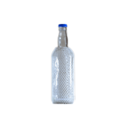
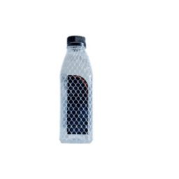
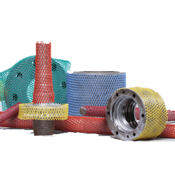
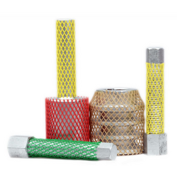
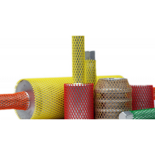
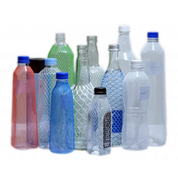
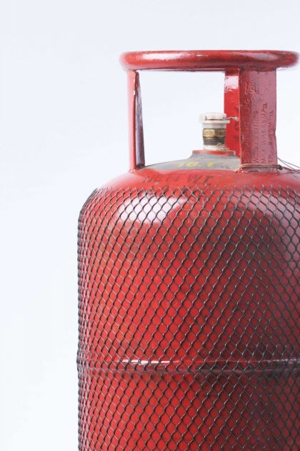

Application
- On Automotive parts
- Cutting tools
- Bolts
- Coated Materials in internal shop floor handling
- Pumps & Valves
Advantages
- Reduces damage on finished products
- Impact resistance as it provides cushioning
- Product can be colour coded
- Chemical resistance
- Economical choice
- Stretches easily and fits tightly even on odd shapes & sizes
Isopac protective sleeves also can be used for Gas Cylinders, Oxygen Bottles and any other cylinders. Isopac protective sleeves prevent damage to the coloured surface of cylinders in the shop floor or in transit thus preventing them from rusting.
ISOPAC offers a wide range of Protective Sleeve for surface protection of Gas Cylinder Drum. These sleeves provide extra protection to the cylinders drums, while shipping and handling. The sleeves offered by us are manufactured under the guidance of our expert professionals, who make use of high-grade plastics and other raw material in the manufacturing process.
Features
- Protects coloured surface
- Prevents damage during transit
- Avert rusting
- Sizes & colours available
- Tightly holds the product
- High strength
- Durability
- Light weigh

- Protective Mesh is ideal for shop floor as it provides protection to the finished product during storage.
- As the mesh is made from plastic it is resistant to oil and chemical and can be reused for a long time and also be washed. Its open mesh structure allows fruits to flow through unlike the cardboards that are traditionally used.
- We offer plastic netting and mesh in a wide range of apertures hole sizes, weights, and thicknesses. Plastic Netting is produced through extrusion, expansion or weaving processes to create unique features for your application.